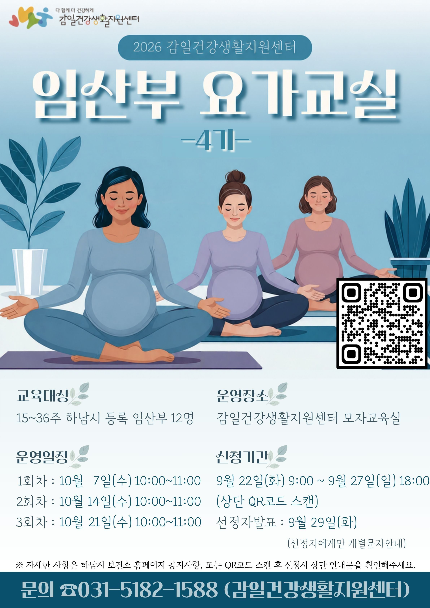
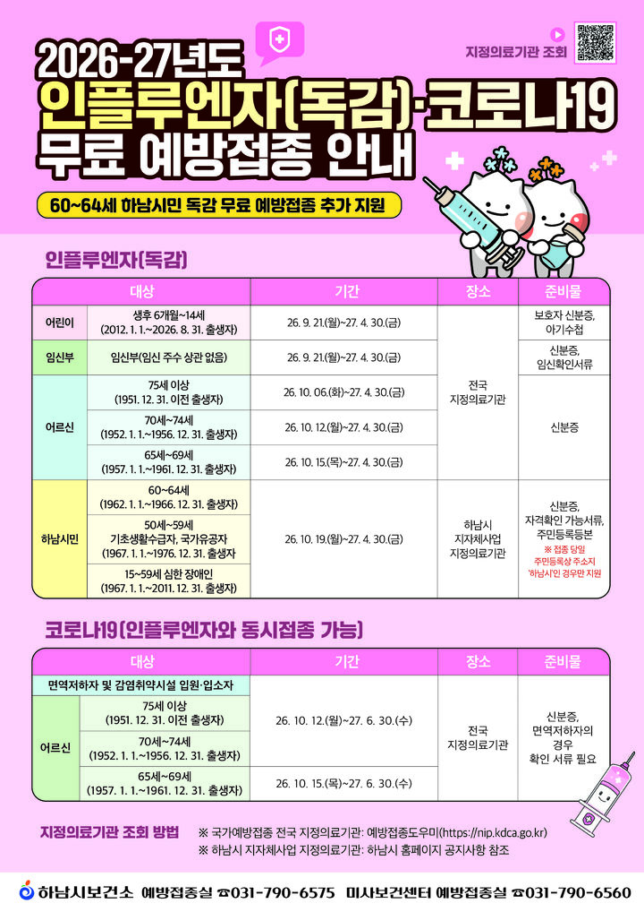
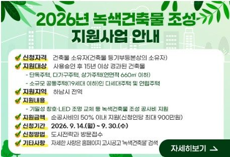

44호 | 2026년 9월 21일 발행
📌 이번 호 주요 목차
📝 현장일지
이광재, "한강변에 기후부 장관님과 함께 갔습니다"… 미사 한강변 황톳길·모래사장 걷기 현장
미사 한강변을 걸었습니다. 김성환 기후에너지환경부 장관, 김경수 지방시대위원장, 김동연 경기도지사, 김상호 전 하남시장과 함께 신발을 벗고 촉촉한 황톳길과 맨발 모래사장을 같이 걸었습니다. 한강의 뛰어난 자연환경을 소중히 지키면서 시민들의 편안한 휴식 공간이자 건강한 힐링 명소로 다듬어갈 구상을 나눴습니다.
📌 출처: 이광재 공식 네이버 블로그
📝 현장일지
이광재, "이번 주말 하남 종주기 — 걷고, 탁구 치고, 장 보고"… 시민과 함께한 생생 현장
주말 하남 곳곳을 누비며 하남시민 여러분을 만났습니다. '위례길사람들'과 함께 검단산과 한강변 산책길을 걸으며 소통하고, 생활체육 탁구 동호인분들과 함께 땀방울을 나누었으며, 한가위를 맞아 전통시장에서 명절 장을 보았습니다. 현장에서 따뜻하게 건네주시는 시민들의 목소리를 의정활동에 꼼꼼히 반영하겠습니다.
📌 출처: 이광재 공식 네이버 블로그
🎥 현장일지 (영상)
"위례길 걷기 & 생활체육 현장" 이광재 국회의원 주말 하남 현장일지 숏폼
주말 하남 산책길 걷기와 생활체육 현장에서 하남시민들과 생생하게 소통하는 모습을 담은 숏폼 영상입니다. 시민들과 함께 어울리는 활기찬 현장을 영상으로 확인해 보세요.
📌 출처: 이광재 공식 유튜브 (이광재 TV / 광재일하남)
📰 언론보도
추미애 경기지사, 민주당과 첫 예산정책협의… 철도·반도체 국비 확대 건의 예정
추미애 경기도지사가 오는 21일 오전 경기도북부청사에서 민선 9기 첫 경기도-더불어민주당 예산정책협의회를 열고 지방재정 제도 개선과 철도·반도체 등 주요 현안, 10개 사업의 국비 확보 방안을 논의합니다. 당에서는 김민석 민주당 대표, 한병도 원내대표, 한정애 사무총장, 권칠승 정책위의장, 이광재 국회 예산결산특별위원장, 서영석 경기도당위원장 등이 참석해 경기도 주요 현안과 예산 협력 방안을 논의할 예정입니다.
📌 출처: 전자신문 (김동성 기자)
📰 하남 지역 주요 뉴스
📰 문화/축제
가을 하늘 아래 시민들로 채워진 미사호수공원… 2026 하남이성산성문화제 개막
19일 오후 높고 맑은 가을 하늘 아래 미사호수공원에서 '2026 하남이성산성문화제'가 화려하게 개막했습니다. 잔디광장을 찾은 가족과 연인, 시민들로 가득 찬 가운데, 하남의 역사적 유산인 이성산성과 미사호수공원을 잇는 야외 공연과 다채로운 역사 문화 체험 프로그램이 개최되어 큰 호응을 얻었습니다.
📌 출처: 디스커버리뉴스 (이명수 기자)
📰 행정/시정
하남시, 이사 후 '주소일괄정정' 신청 주의 당부
하남시(시장 이현재)는 이사 후 카드사·통신사 등에 등록된 주소를 변경하려는 시민들에게 정부24의 '주소일괄정정' 민원을 잘못 신청하지 않도록 주의를 당부했습니다. '주소일괄정정'은 건물 도로명주소 변경 시 사용하는 행정 서비스로, 카드나 통신사 주소 변경은 별도의 금융·통신 주소이전 통합서비스를 이용해야 합니다.
📌 출처: 스포츠동아 (고성철 기자)
📰 교통/복지
하남시, 추석 연휴 24일부터 나흘간 공영주차장 무료 개방
하남시가 추석을 맞아 귀성객과 시민들의 주차 편의를 높이고 전통시장 및 인근 상권을 활성화하기 위해 9월 24일부터 27일까지 나흘간 관내 공영주차장을 무료로 개방합니다. 또한 전통시장 주변 도로의 불법 주정차 단속을 한시적으로 유예하여 명절 장보기 편의를 대폭 지원합니다.
📌 출처: 기호일보 (이홍재 기자)
💬 하남 맘카페 HOT 이슈
2026년 9월 21일 기준 하남 지역 커뮤니티(맘카페)에서 화제성과 댓글이 가장 폭발했던 HOT 이슈 TOP 3 소식입니다.
1️⃣ "이번 주말 아이와 어디 가시나요?" 2026 하남이성산성문화제(9/19~20) 개막 소식에 맘카페 '기대 만발'
현황: 하남시 대표 가을축제인 '2026 하남이성산성문화제'가 9월 19일(토)~20일(일) 미사호수공원 잔디광장과 이성산성 일원에서 개최된다는 소식이 전해지면서, 아이와 함께할 주말 나들이 코스로 맘카페 게시판이 들썩이고 있습니다.
💡 주민 포인트: 큰별쌤 최태성 역사콘서트, 개막 주제공연, 어린이 랜덤플레이댄스, 다채로운 체험 부스 운영 등 전 세대 가족 참여 프로그램 풍성.
💬 주민 반응: "최태성 선생님 역사 콘서트 아이들이랑 꼭 들으러 가야겠어요!", "주말 미사호수공원 잔디광장 자리 잡기 치열하겠네요", "가족 주말 나들이로 딱입니다" 맘카페 추천 이어져.
2️⃣ "우리 아이 등하굣길 한층 안전해진다!" 개학기 초등학교 통학로 불법주정차·유해환경 집중 단속 환호
현황: 하남시가 2학기 개학기를 맞아 관내 초등학교 주변 어린이보호구역(스쿨존) 내 불법주정차 단속을 강화하고, 통학로 유해 광고물 정비 및 룸카페·편의점 청소년 유해환경 집중 점검에 나섰다는 소식에 학부모 엄마들의 열띤 호응이 이어졌습니다.
💡 주민 포인트: 초등학교 어린이보호구역 통학로 안전 강화, 불법 주정차 단속 및 청소년 유해환경 집중 정비.
💬 주민 반응: "학교 앞 횡단보도 불법 주정차 때문에 늘 불안했는데 단속 강화되어 다행이에요!", "아이들 안심 통학로 조성을 적극 환영합니다" 맘카페 학부모 찬사.
3️⃣ "우리 동네 생활 사업 주민이 직접 뽑았다!" 13개 동 주민총회 성료… '어린이 플로깅 & 미술대회' 확정 관심
현황: 하남시 13개 동에서 약 4,800여 명의 주민이 직접 투표에 참여한 2026년 동별 주민총회가 성공적으로 마무리되며, '망월천 어린이 플로깅', '나룰어린이 미술대회', '치매예방 웃음치료' 등 주민 생활 밀착형 2027년 사업들이 확정되어 맘카페에서 큰 화제를 모았습니다.
💡 주민 포인트: 13개 동 주민참여예산 직접 투표 결과 및 아이·가족 맞춤형 마을 사업 확정.
💬 주민 반응: "아이와 함께 손잡고 가서 투표했던 어린이 플로깅 사업이 선정되어 정말 기뻐요!", "우리 동네에 꼭 필요한 사업들이 잘 집행되면 좋겠네요" 맘카페 따뜻한 호응.
🎭 ALL IN 하남라이프
2026년 9월 21일 기준 한눈에 보는 하남시 최신 문화·행사·교육 안내 가이드
📚 ~2026.11.30 | 도서관/시민참여
하남시어린이영어도서관 시민 추천도서 의견수렴 안내
"여러분이 추천한 영어도서가 어린이영어도서관의 책이 됩니다!"
하남시어린이영어도서관에서 시민들이 원하는 영문 서적을 구입·비치하기 위해 의견수렴을 진행합니다.
👥 참여 대상: 하남시민 누구나
📅 진행 기간: 2026년 9월 14일(월) ~ 11월 30일(월)
📖 추천 분야: 어린이 영어도서 (그림책, 챕터북 등)
📱 참여 방법: 안내 포스터 QR코드 스캔 후 온라인 작성
하남시어린이영어도서관에서 시민들이 원하는 영문 서적을 구입·비치하기 위해 의견수렴을 진행합니다.
👥 참여 대상: 하남시민 누구나
📅 진행 기간: 2026년 9월 14일(월) ~ 11월 30일(월)
📖 추천 분야: 어린이 영어도서 (그림책, 챕터북 등)
📱 참여 방법: 안내 포스터 QR코드 스캔 후 온라인 작성
📌 출처: 하남시어린이영어도서관
🍁 2026.10월 운영 | 도서관/문화강좌
하남시위례도서관 10월 독서문화 프로그램 안내
"가을의 풍요로움을 책과 함께! 10월 독서문화 프로그램"
하남시위례도서관에서 단풍 계절 10월을 맞이하여 풍성한 독서 토론 및 유아·어린이·성인 대상 문화 프로그램을 진행합니다.
📍 장소: 하남시위례도서관 강당 및 문화교실
📝 신청 방법: 하남시립도서관 홈페이지 온라인 선착순 접수
☎️ 문의: 위례도서관 안내 desk
하남시위례도서관에서 단풍 계절 10월을 맞이하여 풍성한 독서 토론 및 유아·어린이·성인 대상 문화 프로그램을 진행합니다.
📍 장소: 하남시위례도서관 강당 및 문화교실
📝 신청 방법: 하남시립도서관 홈페이지 온라인 선착순 접수
☎️ 문의: 위례도서관 안내 desk
📌 출처: 하남시위례도서관
🧘♀️ 2026.09.22~09.27 접수 | 임산부/건강교실
2026 감일건강생활지원센터 <임산부 요가교실 4기> 수강생 모집
"다 함께 더 건강하게! 감일지구 임산부 맞춤형 건강 요가 강좌"
감일건강생활지원센터에서 임산부의 건강 관리와 순산을 돕기 위한 요가교실 4기 수강생을 모집합니다.
👥 교육 대상: 15~36주 하남시 등록 임산부 12명
📅 운영 일정: 10월 7일(수), 10월 14일(수), 10월 21일(수) 10:00~11:00
📍 운영 장소: 감일건강생활지원센터 모자교육실
📝 신청 기간: 9월 22일(화) 09:00 ~ 9월 27일(일) 18:00 (QR코드 온라인 신청)
☎️ 문의: 감일건강생활지원센터 031-5182-1588
감일건강생활지원센터에서 임산부의 건강 관리와 순산을 돕기 위한 요가교실 4기 수강생을 모집합니다.
👥 교육 대상: 15~36주 하남시 등록 임산부 12명
📅 운영 일정: 10월 7일(수), 10월 14일(수), 10월 21일(수) 10:00~11:00
📍 운영 장소: 감일건강생활지원센터 모자교육실
📝 신청 기간: 9월 22일(화) 09:00 ~ 9월 27일(일) 18:00 (QR코드 온라인 신청)
☎️ 문의: 감일건강생활지원센터 031-5182-1588

📌 출처: 하남시 보건소 (감일건강생활지원센터)
🏛️ 공공기관 소식지
2026년 9월 21일 기준 경기도 및 하남시 공공기관 주요 공고·신청 안내입니다.
💉 하남시보건소 | 2026.09.21~
2026-2027절기 인플루엔자(독감)·코로나19 무료 예방접종 안내 (60~64세 하남시민 추가 지원)
하남시 보건소에서 환절기 건강 증진을 위해 2026-2027절기 독감 및 코로나19 무료 예방접종을 순차적으로 시행합니다.
👶 어린이·임신부: 2026년 9월 21일(월)부터 접종 개시
👵 어르신 (65세 이상): 75세 이상(10/6~), 70~74세(10/12~), 65~69세(10/15~)
🏥 하남시민 자체 추가 지원: 60~64세, 50~59세 기초수급자/국가유공자, 15~59세 심한 장애인 (10/19부터 하남시 지정병원에서 무상 지원)
📍 접종 장소: 지정 위탁의료기관 (예방접종도우미 사이트 nip.kdca.go.kr 조회)
👶 어린이·임신부: 2026년 9월 21일(월)부터 접종 개시
👵 어르신 (65세 이상): 75세 이상(10/6~), 70~74세(10/12~), 65~69세(10/15~)
🏥 하남시민 자체 추가 지원: 60~64세, 50~59세 기초수급자/국가유공자, 15~59세 심한 장애인 (10/19부터 하남시 지정병원에서 무상 지원)
📍 접종 장소: 지정 위탁의료기관 (예방접종도우미 사이트 nip.kdca.go.kr 조회)

📌 출처: 하남시 보건소 (보건정책과)
🏡 하남시 도시전략과 | ~2026.09.30
2026년 녹색건축물 조성 지원사업 공고 안내
하남시 관내 사용승인 15년 이상 경과된 소규모 노후 주택 단열 창호 교체 및 LED 조명 교체 비용의 50% 이내(최대 900만 원)를 지원하는 공모 신청 안내입니다.
📅 신청 기간: 2026년 9월 14일(월) ~ 9월 30일(수)
📋 신청 자격: 하남시 전역 15년 경과 단독·다세대·상가주택 건물 소유자
🏢 접수 장소: 하남시청 도시전략과 방문 접수
📅 신청 기간: 2026년 9월 14일(월) ~ 9월 30일(수)
📋 신청 자격: 하남시 전역 15년 경과 단독·다세대·상가주택 건물 소유자
🏢 접수 장소: 하남시청 도시전략과 방문 접수

📌 출처: 하남시청 도시전략과
🌾 하남시 식품위생농업과 | 2026.09.21 ~ 10.23
2026년도 하남시 농어민 기회소득 지원사업 2차 신청 접수 안내 (하남시 공고 제2026-1701호)
하남시 관내 농어업인의 공익적 가치 보장 및 삶의 질 향상을 위한 '2026년도 농어민 기회소득 지원사업' 2차 신청을 접수합니다.
📅 신청 기간: 2026년 9월 21일(월) ~ 10월 23일(금)
🌾 지원 대상: 하남시 주소지 및 농어업경영체 등록 농어민 (연속 1년 이상 거주·영농, 농외소득 3,700만 원 미만)
💰 지원 내용: 농어민 개인별 지역화폐 지급 (청년·환경·귀농어민 월 15만 원 / 일반농어민 월 5만 원, 하반기 30~90만 원 이내)
💻 신청 방법: 주소지 동 행정복지센터 방문 신청 또는 농어민 기회소득 통합지원시스템 온라인 신청 (farmbincome.gg.go.kr)
💵 지급 시기: 2026년 12월 중 (지급일로부터 180일 이내 사용)
📞 문의처: 하남시청 담당부서 (031-790-5769) 및 각 동 행정복지센터
📅 신청 기간: 2026년 9월 21일(월) ~ 10월 23일(금)
🌾 지원 대상: 하남시 주소지 및 농어업경영체 등록 농어민 (연속 1년 이상 거주·영농, 농외소득 3,700만 원 미만)
💰 지원 내용: 농어민 개인별 지역화폐 지급 (청년·환경·귀농어민 월 15만 원 / 일반농어민 월 5만 원, 하반기 30~90만 원 이내)
💻 신청 방법: 주소지 동 행정복지센터 방문 신청 또는 농어민 기회소득 통합지원시스템 온라인 신청 (farmbincome.gg.go.kr)
💵 지급 시기: 2026년 12월 중 (지급일로부터 180일 이내 사용)
📞 문의처: 하남시청 담당부서 (031-790-5769) 및 각 동 행정복지센터
📌 출처: 하남시청 (공고 제2026-1701호)
© 2026 우리동네 진짜일꾼 이광재
1